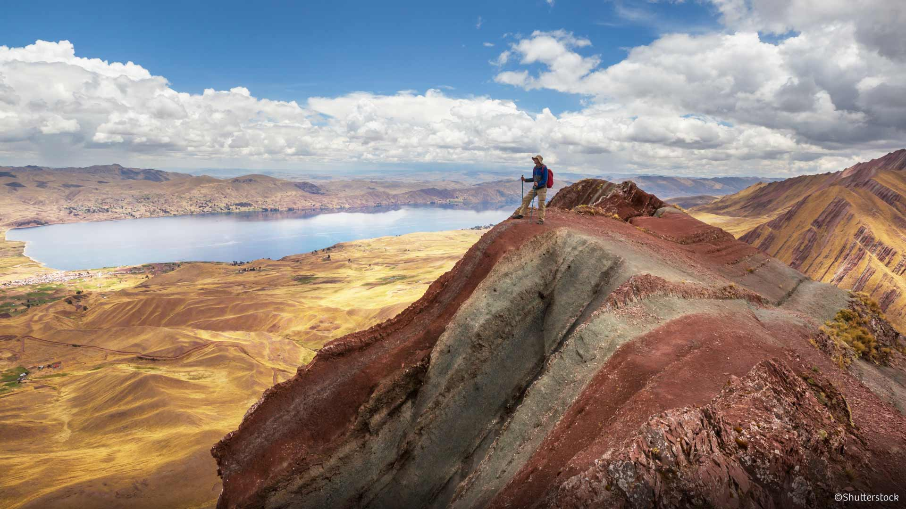
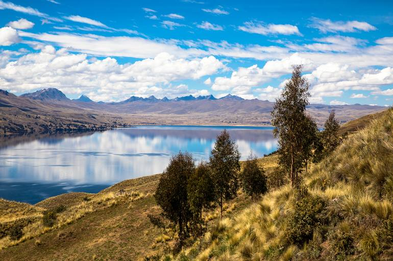
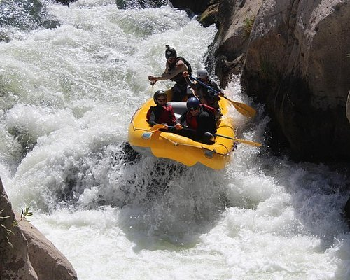
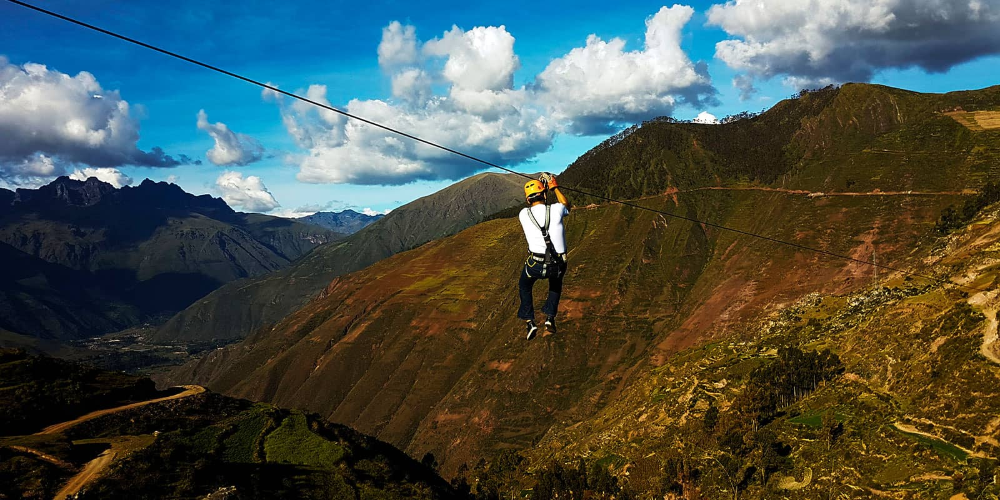

De alternatieve regenboogberg op 4.791m en wildwaterrafting op de Vilcanota — vol gas richting Cusco!
Terwijl iedereen naar de Rainbow Mountain (Vinicunca) trekt, is Pallay Punchu het best bewaarde geheim van Peru. Op 4.791 meter tover de natuur een tapijt van mineraalafzettingen in alle kleuren van de regenboog — en jullie hebben het bijna voor jullie alleen.


Om 06:30 vertrekt de groep vanuit Yanque voor een prachtige rit van 6 uur naar de Langui Lagune — met meerdere stops bij traditionele dorpjes zoals Tuti en Sibayo, het "kasteel" van Callalli, de Condorama Dam op 4.737m en het stenen bos van Yauri.
Bij het Langui Meer (25 km lang) — een perfecte picknick-plek — ontmoeten jullie de gids voor de wandeling naar Pallay Punchu. De korte wandeling (3 km heen en terug, 45 min klimmen) beloont jullie met 360° panorama en de ongelooflijke regenboogkleurige mineraalformaties op 4.791 meter.
's Avonds logeren jullie in de Cusipata River Lodge — met kampvuur, sauna, tuin en een diner aan de rivier. 🔥


Na het ontbijt is het tijd voor actie! Met helm, neoprene wetsuit en peddel bestormen jullie de Vilcanota rivier — de bovenloop van de Urubamba, met nog schoon glaciaalwater. Klasse 2 tot 3+ stroomversnellingen, een ervaren instructeur in de raft en een veiligheidskajak die jullie volgt. Duur: ca. 2 uur.
Daarna optioneel: ziplining over de rivier via 2 kabels van elk 100 meter. Na de lunch is het in 2 uur rijden naar Cusco — aankomst ~14:30.
Volgende bestemming
De archeologische hoofdstad van Amerika wacht — en daarna de Heilige Vallei van de Inca's.
Verder naar Cusco